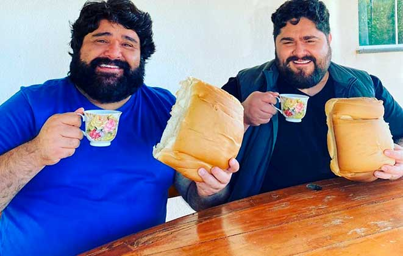
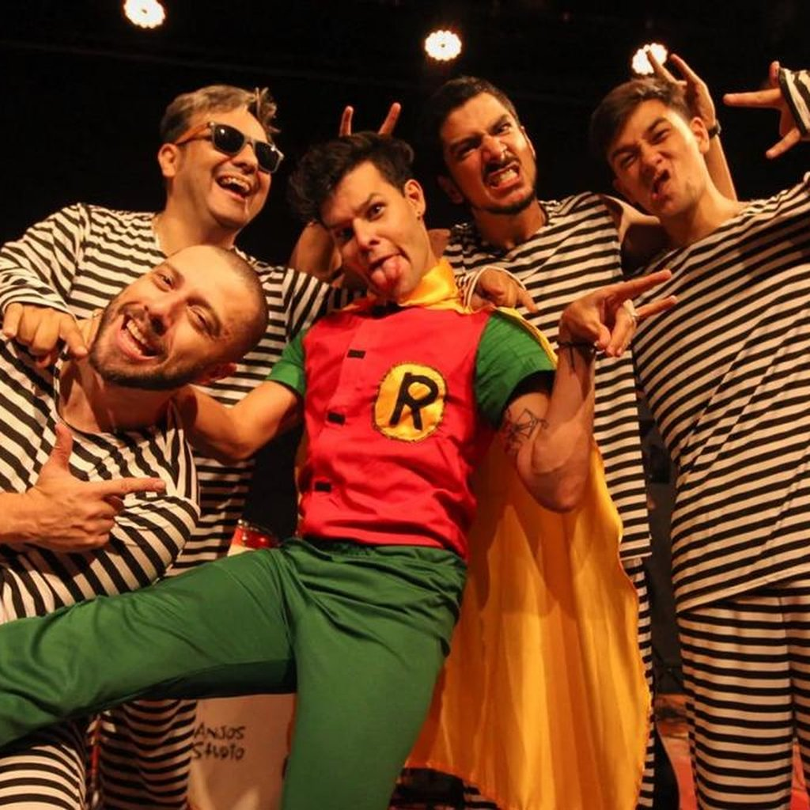
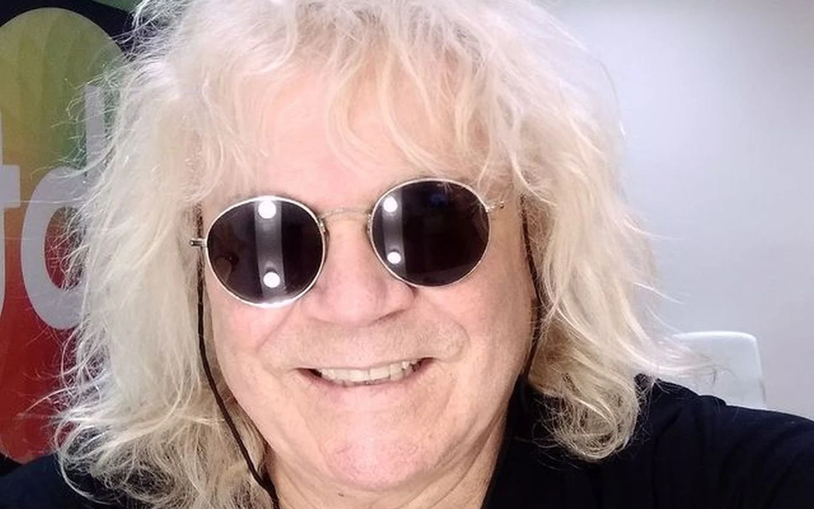

Festival
Saiba mais sobre esses icone da musica Brasileira
Cantores

Cesar Menotti Fabiano
César Menotti & Fabiano é uma dupla sertaneja brasileira formada pelos irmãos César Menotti da Silva (Itapira, 24 de março de 1982) e Fabiano José da Silva (Califórnia, 30 de dezembro de 1977)

Mamonas Assassina
Mamonas Assassinas, comumente abreviado como Mamonas, foi uma banda brasileira de rock formada em Guarulhos em 1995, originada da banda Utopia.

ovelha
Ademir Rodrigues de Araújo,[1] mais conhecido como Ovelha (Olinda, 14 de abril de 1955),[1] é um cantor, músico, instrumentista musical e compositor brasileiro